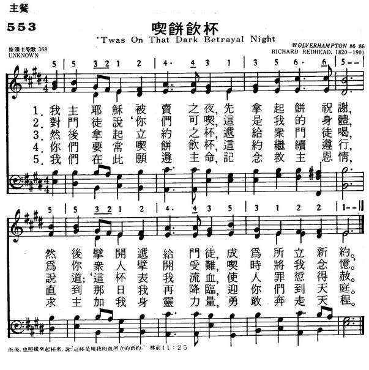
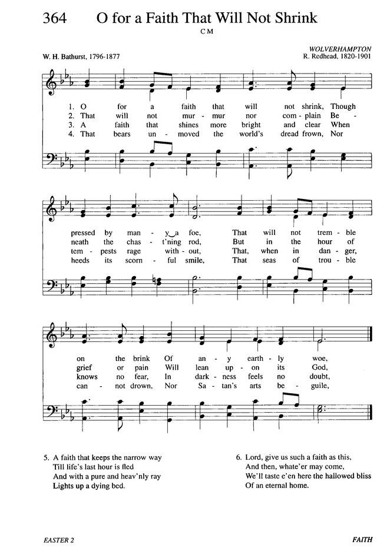

|
|
|
|
1 It was a dark and dismal night 2 Before the mournful scene began, 3 "This is my body, slain for sin; 4 "Do this," he said, "till time shall end, 5 Jesus, your feast we celebrate; |
553吃饼饮杯
1.我主耶稣被卖之夜，先拿起饼祝谢，
然后擘开递给门徒，成为所立新约。 2.对门徒说“你们可吃，这是我的身体， 为你众人擘开受难，吃时将我念忆。” 3.然后拿起立约之杯，递给众门徒喝， 说道：“这杯表我流血，使人罪愆得赦。” 4.你们要常吃饼饮杯，这约继续遵行， 直到那日我再降临，迎你们到天庭。 5.我们在此愿遵主命，纪念救主恩情， 求主加我身灵力量，勇敢奔走天程。 |
|
https://www.mred365.cn/szxg/7556.html

 |
|
|
|
|

Evangelical Hymn: "T´was on That Dark, That Doleful Night" - https://youtu.be/yYo-zTjLtF0
| Text: | Twas on that Dark, that Doleful Night |
| Author: | Isaac Watts, 1674-1748 |
| hort Name: | Isaac Watts |
| Full Name: | Watts, Isaac, 1674-1748 |
| Birth Year: | 1674 |
| Death Year: | 1748 |
Isaac Watts

was the son of a schoolmaster, and was born in Southampton, July 17, 1674. He is said to have shown remarkable precocity in childhood, beginning the study of Latin, in his fourth year, and writing respectable verses at the age of seven. At the age of sixteen, he went to London to study in the Academy of the Rev. Thomas Rowe, an Independent minister. In 1698, he became assistant minister of the Independent Church, Berry St., London. In 1702, he became pastor. In 1712, he accepted an invitation to visit Sir Thomas Abney, at his residence of Abney Park, and at Sir Thomas' pressing request, made it his home for the remainder of his life. It was a residence most favourable for his health, and for the prosecution of his literary labours. He did not retire from ministerial duties, but preached as often as his delicate health would permit.
The number of Watts' publications is very large. His collected works, first published in 1720, embrace sermons, treatises, poems and hymns. His "Horae Lyricae" was published in December, 1705. His "Hymns" appeared in July, 1707. The first hymn he is said to have composed for religious worship, is "Behold the glories of the Lamb," written at the age of twenty. It is as a writer of psalms and hymns that he is everywhere known. Some of his hymns were written to be sung after his sermons, giving expression to the meaning of the text upon which he had preached. Montgomery calls Watts "the greatest name among hymn-writers," and the honour can hardly be disputed. His published hymns number more than eight hundred.
Watts died November 25, 1748, and was buried at Bunhill Fields. A monumental statue was erected in Southampton, his native place, and there is also a monument to his memory in the South Choir of Westminster Abbey. "Happy," says the great contemporary champion of Anglican orthodoxy, "will be that reader whose mind is disposed, by his verses or his prose, to imitate him in all but his non-conformity, to copy his benevolence to men, and his reverence to God." ("Memorials of Westminster Abbey," p. 325.)
--Annotations of the Hymnal, Charles Hutchins, M.A., 1872.
| Tune: | WOLVERHAMPTON |
| Composer: | R. Redhead, 1820-1901 |
| Title: | WOLVERHAMPTON |
| Composer: | Richard Redhead |
| Meter: | 8.6.8.6 |
| Incipit: | 55321 24431 35665 |
| Key: | E♭ Major |
| Copyright: | Public Domain |
| Short Name: | Richard Redhead |
| Full Name: | Redhead, Richard, 1820-1901 |
| Birth Year: | 1820 |
| Death Year: | 1901 |
Richard Redhead (b. Harrow, Middlesex, England, 1820; d. Hellingley, Sussex, England, 1901)

was a chorister at Magdalen College, Oxford. At age nineteen he was invited to become organist at Margaret Chapel (later All Saints Church), London. Greatly influencing the musical tradition of the church, he remained in that position for twenty-five years as organist and an excellent trainer of the boys' choirs. Redhead and the church's rector, Frederick Oakeley, were strongly committed to the Oxford Movement, which favored the introduction of Roman elements into Anglican worship. Together they produced the first Anglican plainsong psalter, Laudes Diurnae (1843). Redhead spent the latter part of his career as organist at St. Mary Magdalene Church in Paddington (1864-1894).
Bert Polman